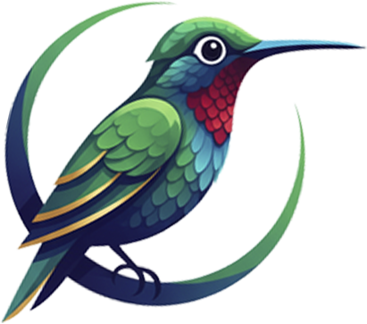

Toujours à l'écoute, toujours sécurisée. Une intelligence émotionnelle avancée conçue spécifiquement pour la jeunesse africaine. Audrey n'est pas un simple algorithme, c'est une présence bienveillante.
Bonjour, comment te sens-tu aujourd'hui ? Je suis là pour t'écouter sans jugement.
Analyse
Temps Réel
Une technologie de pointe conçue pour comprendre les nuances humaines et offrir un espace sûr pour grandir.
Une écoute empathique disponible 24h/24 et 7j/7. Audrey détecte votre humeur et adapte ses réponses pour vous apaiser.
Traitement du langage naturel adapté aux contextes culturels et aux dialectes locaux africains pour une compréhension profonde.
Vos échanges sont 100% anonymes et cryptés de bout en bout. Votre vie privée est notre priorité absolue.
Compréhension fine des nuances émotionnelles et suivi de votre évolution pour des réponses toujours plus pertinentes.
Audrey n'est pas qu'une oreille, c'est un guide. Lorsque la situation l'exige, elle vous oriente intelligemment vers une aide humaine qualifiée et des professionnels de santé disponibles dans votre région.
Découvrez une nouvelle façon d'interagir avec la technologie pour votre bien-être mental.